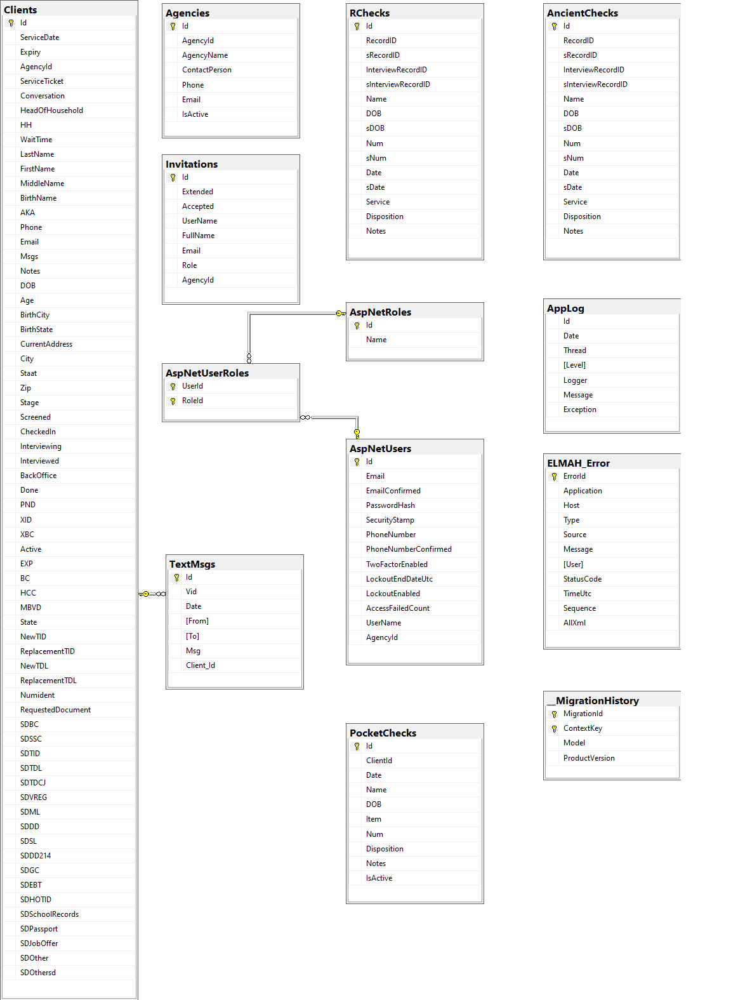

Database
OPIDDaily is a database driven application built using SQL Server technology. In the desktop environment OPIDDaily is built using the Sql Server Express database engine. In the online environment at AppHarbor a full SQL Server is used. The two versions are compatible with each other with respect to the database features used. SQL Server Management Studio v18.0 (SSMS) is used to manage both database engines. In the desktop environment, Windows Authentication is used to connect to the Sql Server Express database. In the online environment, SQL Server Authentication is used to connect to the SQL Server database.
When application OPIDDaily was created at AppHarbor, a free version of SQL Server was added on through the AppHarbor interface. The connection string to this SQL Server is found by selecting the SQL Server add-on and following the "Go to SQL Server" link on the page that appears. The value of this connection string is stored as the value of Config.WorkingProductionConnection string on file Config.cs. The 3 components of the connection string, HostName, UserName and Password, are also displayed on this page. The components may be used to configure a SQL Server Authentication connection to the AppHarbor database through SSMS.
The same connection string displayed at AppHarbor is retrieved at runtime by accessing Config.ConnectionString, which returns the value of
SQLSERVER_CONNNECTION_STRING configured in the <appSettings> section of file Web.config. The statically configured value on file Web.Config points to
the OpidDailyDB on the desktop SQL Server Express. At runtime, AppHarbor will overwrite this statically configured value with the value displayed at
AppHarbor. See the section on the Connection String on this tab.
Connection String
In the desktop environment, SSMS was used to create an empty project database by executing the SQL query
create database OpidDailyDB
The Visual Studio Server Explorer (found under the OPIDDaily project View menu) was then used to discover the connection string to database OpidDailyDB
by creating a new Data Connection to it and copying the Connection String property of the data connection as the value of the variable
SQLSERVER_CONNECTION_STRING in the <appSettings> section of Web.config. The value is accessed on files IdentityDB.cs and OpidDailyDB.cs by
reading the value of the static variable Config.ConnectionString.
The online version of OPIDDaily is hosted as an application at AppHarbor and it uses a database server provided as an add-on. The add-on database server includes a database which serves as the application database, so it is not necessary to create the application database as was done above for the desktop version.
ELMAH uses the configuration string used by the OPIDDaily application. This is accomplished by configuring the connection
string OpidDailyConnectionString in the <connectionStrings> section on Web.config and setting the connection string alias for the SQL Server
add-on at AppHarbor to be OpidDailyConnectionString. To set this alias, select the SQL Server add-on for application OPIDDaily at AppHarbor and then
follow the link "Go to SQL Server" on the page that appears. Click the button labeled "Edit database configuration" to set
OpidDailyConnectionString as the alias value for the connection string. When this is done, OpidDailyConnectionString will appear as the value of
SQLSERVER_CONNECTION_STRING_ALIAS in the Configuration variables section of application OPIDDaily at AppHarbor.
When application OPIDDaily is deployed to AppHarbor, this alias will overwrite the configured value on file Web.config by the value of the connection string for the AppHarbor database. This is explained in the same knowledge base article referenced above.
Database Diagram

The diagram was created by SSMS, copied to the clipboard (using the "Copy Diagram to Clipboard" command found on the freespace context menu) and then pasted into the Paint tool. Inside of Paint it is saved as a .PNG file. Version 18.0 of SSMS does not allow database diagrams to be created. Newer releases have restored this capability. But the diagram seen here was created by an earlier release of SSMS, which did have the ability to create database diagrams.
The main tables of application OPIDDaily are the tables Clients, Visits, RChecks and AncientChecks, The table Clients stores clients, their service requests and their supporting documents, and this is the reason that table Clients has so many data fields. Some of this data could have been factored out by the use of many-to-many relationship tables, but it was decided that a single table would be simpler. Notice that many of the data fields in table Clients are bit fields. As a result, a record in the table does not consume much database storage.
The table Visits is related to the Clients table by the foreign key Id as there is a one-to-many relationship between a client and the visits he/she has made to Operation ID. The table RChecks is used to store check data. It is referenced to the Clients table by the RecordID and InterviewRecordID data fields. These two data fields identify a client in the Apricot database together with a particular visit the client has made to Operation ID. The service history of a client consists of the checks that haven been issued to the client. To retrieve the service history from the table RChecks the client is looked up by last name and DOB. This is not guaranteed to be a unique lookup, but it almost always is.
The name RChecks is short for research checks. The RChecks table was so named because checks whose disposition is unknown are said to be under research until their disposition is resolved. The AncientChecks table was added to relieve the overcrowding of the RChecks table. Originally table RChecks contained all the checks that have been issued by Operation ID. Updating this table with a batch of new checks became slow as the table grew. So, the table was split up into 2 tables by years. Currently the RChecks table contains checks from the years 2018-2020 and the AncientChecks table contains checks from the years 2016 and 2017.
There exist checks going back to the year 2013 when a Microsoft Access database was used to manage clients; however, the disposition of checks from these early years was not stored along with the check numbers in the Access database. These check numbers were migrated to the Apricot database as part of a client's service history, but the check numbers from the years 2013-2015 were not entered into the OPIDDaily database because it was believed that clients from these years would rarely return to Operation ID. This has saved valuable storage space in the OPIDDaily database. The free deployment of the OPIDDaily website is given 20MB of data space on a shared SQL Server. The stored check data consumes 15.2MB of the free space on the shared SQL Server. Adding the checks from the years 2013-2015 would nearly fill up the free 20MB.
At some point it will be useful to reconsider the twice-in-a-lifetime policy for client service. Ten years from now it is unlikely that clients from fifteen years in the past will come to Operation ID seeking service. So there is no advantage to storing checks from the distant past. A data retention policy should be formulated to purge the database of old records. Social Solutions does not allow customers to delete records from their own Apricot database. To delete records a customer must request that Social Solutions do it for them.
The SuperAdmin user of the OPID Daily website has the ability to delete a year's worth of checks at a time. If a data retention policy of 5 years were put in place, then the OPID Daily website would easily be able to enforce it. Furthermore, it would simplify part of the user interface as there would be no need to consult Apricot for information not in the OPID Daily database: all the check data for the past 5 years could be stored. And instead of a twice-in-a-lifetime policy, Operation ID could support a twice-in-five-years policy. This would make OPID Daily a "self-contained" website. .
When a client appears for service, a check is first made in the Apricot database to see if the client has a visit history. If the client does have a visit history and this history does not include any checks before the year 2016, then a Service Ticket including all previous service for the client can be generated at the front desk. If a client's visit history includes visits prior to 2016, then these visits will be included on the Service Ticket by consulting the Apricot database. In most cases, the checks from visits prior to 2015 will not include a disposition and their disposition will need to be determined in the back office by consulting the Quickbooks ledger. The inconvenience of this is outweighed by its rarity and the desire to stay below the 20MB free limit of data storage at AppHarbor.
The table ELMAH_Error stores error messages generated by uncaught application errors. See the section on ELMAH on the Infrastructure tab. The table AppLog contains the log messages generated by the application using log4net. See the section on log4net on the Infrastructure tab.
The 3 AspNet tables in the center the above diagram are created by ASP.NET Identity 2.0 to manage registered users of OPIDDaily. The 3 tables are managed by their own data context which cannot be augmented by additional tables. However, data fields can be added to table AspNetUsers if necessary. The data field AgencyId was added to table AspNetUsers to store the unique AgencyId stored in table Agencies by the Superadmin user. (The AgencyId of an Operation ID user - example the TicketMaster user - is always 0.) The non-ASP.NET Identity tables in the diagram are managed by a separate data context.
The Visual Studio project OPIDDaily has 2 data contexts called IdentityDb and OpidDailyDB. (See the section Entity Framework Code First of the Infrastructure tab.) The technique for establishing a single connection string over 2 data contexts is described in Scott Allen's Pluralsight video.
The tables belonging to data context OpidDailyDB were created at AppHarbor using a script file. This was done by running the command
PM> update-database -ConfigurationTypeName OPIDDaily.DataContexts.OPIDDailyMigrations.Configuration -Script -SourceMigration $InitialDatabase
to generate a SQL script to be run in SSMS against the database at AppHarbor.
The command created a script file necessary to create the tables for this data context using all the migrations applied since the initial migration. Notice that there is no colon (:) following -SourceMigration in this command.
To generate a script to run the Down methods of multiple down-migrations, do, for example,
PM> Update-Database -ConfigurationTypeName OPIDDaily.DataContexts.OPIDDailyMigrations.Configuration -Script -TargetMigration: ExpressClient
Notice that there is a colon (:) following -TargetMigration in this command. This command will create a script to execute in SSMS the Down methods of all migrations since (and not including) migration ExpressClient. It is important to be able to generate this script if changes need to be backed out, because the deployed versions of application OPIDDaily cannot be managed by the Package Manager (PowerShell) window available in Visual Studio. The script to execute the Down method must be run in SSMS. After the script has been executed, the reverted migration may be safely deleted from the set of migrations maintained for the data context in Visual Studio.
Database Duplicates
There are still many duplicates in the Apricot database as a result of the initial build from the legacy Access database. As an example, there are two records for the client John Harmon, DOB 9/11/1983:
John Harmon, Record ID: 271978
John Marshall Harmon, Record ID: 4299
Since Service Tickets are built based on last name and DOB, both records will be used in building the Service Ticket for John Harmon. This can cause some confusion! Duplicate records are merged when they are discovered. The records for John Harmon may have been merged when the reader reads this documentation.
Managing Users
OPIDDaily is a role-based database application administered by a Superadmin user. The Superadmin user has the responsibilty of establishing a login account for each OPIDDaily user, which includes the user's role. This is done to prevent a user from specifying his/her own role when logging in and to force the user into his/her assigned role instead. See the introduction and Role Controllers sections of the Implementation tab for a discussion of roles.
The Superadmin will be given a user name and email address for a new user. For example, if Mary Atwood would like to use the user name Mary and email address maryatwood@gmail.com, this request would be given to the Superadmin user. Provided that the user name Mary is not already in use, the Superadmin user would use a private interface to enter Mary Atwood in the Invitations table under UserName Mary (with FullName Mary Atwood) and Email Address maryatwood@gmail.com. The Superadmin would also use the OPIDDaily interface to assign a role to user Mary Atwood in the Invitations table.
The record in the Invitations table is in effect an invitation for Mary Atwood to register under user name Mary and email address maryatwood@gmail.com in the assigned role. The Superadmin will notify Mary that her account has been created and that she may register with application OPIDDaily using the credentials she has supplied together with a password of her own choosing.
When Mary registers, the user name and email address she provides will be checked against the Invitations table. If this pair of credentials is not found in the Invitations table, Mary's attempt to register will be rejected. If they are found, a record will be created for her in the AspNetUsers table using the password she has specified and using the role assigned by the Superadmin, which has been stored in the Invitations table. On subsequent visits to OPIDDaily, Mary may simply login with the credentials established by her registration. When logged in she will be recognized in her assigned role.
In practice, the Superadmin has created all login accounts and registered all users. This implies that passwords are not secret. However, this has not been an issue. For the convenience of not having to self-register users have been willing to sacrifice a little privacy.
User email addresses do not need to be unique per account. This is not the default behavior; it is enabled by the setting
RequireUniqueEmail = false
in method ApplicationUserManager.Create on file App_Start/IdentityConfig.cs
There are two special accounts reserved for usage by the two users who serve at the front desk on any given day of operation. Each of these accounts has the pre-assigned role called FrontDesk. The users are the Screener and the TicketMaster which correspond to the pipeline stages Screening and Checkin, respectively. (See the Background tab for information about the pipeline stages.) Having dedicated accounts avoids the need to create unique accounts in the role of FrontDesk.
There are also two additional special users called Client1 and Client2 corresponding to the pipeline stages Screening and CheckIn, respectively. (See the Background tab for information about the pipeline stages.) During the screening stage, the Screener user will enter the name and date of birth of an entering client into the OPIDDaily database. To ensure that this information has been correctly entered, the Screener may click a button to have this information appear on a small tablet computer which will be handed to the client for verification. This small tablet computer will be logged into the OPIDDaily application as Client1. During the Checkin stage, by consultng the Apricot database, the TicketMaster user will record any previous visit history by a screened client in the OPIDDaily database. If previous visits indicate that the screened client is ineligible for a service being sought, the TicketMaster may click a button to have the visit history appear on a second small tablet computer which will be handed to the client. This second small tablet computer will be logged into the OPIDDaily application as Client2. Both users Client1 and Client2 are assigned the role FrontDesk.
Database Utilization
AppHarbor allows 20MB of database storage with the free SQL Server. The current utilization can be checked at AppHarbor by selecting the SQL Server used by application OPIDDaily and following the "Go to server" link. As of February 8, 2020 10.2MB out of the free 20MB are in use. This database contains 32,500 checks which were cut since 2013. Of these, between 24,00 and 28,000 checks were cut over the past 4 years. This suggests that there is enough capacity in the free database to run for at least 3 more years before approaching the 20MB limit. The disk utilization should be monitored periodically to make sure the limit is not exceeded. Currently an upgrade to 10GB of space would cost $10/month. This should be an affordable expense when the time comes that the additional space is needed.
SSMS can be used to check on the utilization of a database. To do so:
- Right click a database name
- Navigate to Reports > Standard Reports > Disk Usage
- Navigate to Reports > Standard Reports > Disk Usage By Table
Although this can be done, the single number reported by AppHarbor is easier to understand.
Rebuilding the Research Table
In February 2020 application OPIDChecks was merged into application OPIDDaily for the sake of having a single application that performs both functions. The merge required the Research Table to be added to application OPIDDaily. The merger of the two applications had the additional benefit of allowing application OPIDDaily to use the Research Table to populate the "visit history" of clients with previous visits.
The Research Table was rebuilt by loading files created by two different reports in Apricot:
Bounded Research Report was used to create files:
Bounded Research Table 2017
Bounded Research Table 2018
Bounded Research Table 2019
Bounded Research Table 2020
Imported from Access DB was used to create files:
Imported from Access DB 2010
Imported from Access DB 2011
Imported from Access DB 2012
Imported from Access DB 2013
Imported from Access DB 2014
Imported from Access DB 2015
Imported from Access DB 2016
With the exception of files
Imported from Access DB 2010
Imported from Access DB 2011
Imported from Access DB 2012
Imported from Access DB 2013
Imported from Access DB 2014
which contain very little (and incomplete) data these files were loaded to rebuild the Research Table. See the section on the Database Diagram for more information.
This was a one time rebuild of the Research Table at AppHarbor. As the Research Table became large was necessary to split Files of import data containing a year's worth of data into multiple files to allow the import to be processed. If the amount of data in a given file was still too much, a
504 Gateway Timeout Error
was generated. When this happened, a new instance of OPID Daily was opened. The new instance would resume loading until completion. The second instance did not generate a gateway timeout error.
Moving forward, if the Research Table becomes corrupt, then it can be rebuilt from scratch by regenerating and rerunning these reports. Rebuilding the Research Table from scratch takes several hours. A rebuilt Research Table should not be used for 24 hours to allow for indexes to be built. Until the indexes have been built, searching the Research Table will be sluggish.
AppHarbor does not perform a daily backup on a free SQL Server. It is necessary to step up to a dedicated SQL Server to receive daily backups. The cheapest dedicated SQL Server offers 100GB of storage space at a cost of $200/month. Either the free SQL Server or the upgrade to 10GB of storage at $10/month seems preferable. For now, the Apricot database itself serves as a backup for the OPIDDaily database, since the OPIDaily database can be rebuilt from the Apricot database as described.
Updating the OPIDDaily Database
It is necessary to keep the Research Table updated. This is done on a weekly basis by running the Apricot report called OPID Daily and providing the date of the Monday beginning a week of operation after the week is complete. For example the OPID Daily report should be run using Monday February 10, 2020 as the filter date on any day following Thursday February 13, 2020. This will create a file containing all the records modified during the week starting on Monday February 10.
If this file is created on Monday February 17, then it should be renamed as: OPIDDaily 02172020. By merging the renamed file into application OPIDDaily, the Research Table will be brought up to date.